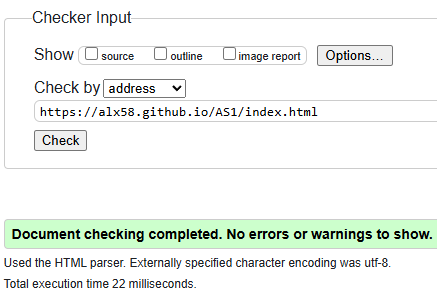

Development Experience
Building this website was not a bad experience there was a lot of different styles being used along with a bit of JavaScript for the burger menu. The development experience was important for me because it helped me develop my problem-solving skills. I was able to learn a bit more about JavaScript and how you can get started when using it along with learning more about changing the colours of the headers within every page and I was able to change it into an RGB type of colour animation.
Design Decisions
I chose more of a minimalistic approach to my website and didn't go all out. I started with the colour orange on most of my words on the main page and decided to switch to an RGB colour to make things look nicer as the header. At the bottom of the website, I decided to put my name there so people that enter the website will know whose portfolio this is. I decided to use a GIF as the background image to make the website a bit more entertaining for the eye and not too bland while still keeping that minimalistic approach to it. For the mobile version, there is a simple burger menu that uses JavaScript to toggle on and off, allowing the user to click on the different pages. Originally, I was going to make a simple hamburger menu without JavaScript but I ran into multiple problems when trying to do so. I found it easier to just use JavaScript in order to make the website more responsive.
Module Experience
This module has helped me a lot so far in improving my problem-solving skills along with my coding skills. Being able to format your own website and make it responsive for different devices was fun to do. I believe that this was a good way to make me engage creatively in the work and altough there were ups and downs this was a good learning experience to have so far
Validation Reports
Video Demonstration
Video
Video Link